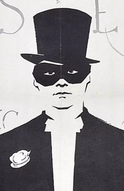

something about
Zhan Zhuridov

Contact info
- email: Zhanzs@mail.ru
- phone: +37529xxxxxxx
About me
I've got interested in programming since childhood, took part in school olympiads.
During my univesity graduation in electronics I always used programming for automatization
of all calculation. A word "solve" was equal "programm" for me, and now I have strong math
nd algoritmic base. My favorite language is JavaScript, also I can write C, Delphi, MatLab,
a little bit ASM for computer and some MCU chips. Last time I'm getting better in NodeJS,
WebGL, AJAX, JQuery, learning OOP and patterns, using modules, trying to write web applications.
Of course I know HTML and CSS, but I rather like coding JS and use HTML just like powerful
tool for GUI. One of succesful project was a shape generator of 3d cone slash gear for Autodesk
TinkerCAD, and it was added in common library.
However I still never worked in large project, but striving for new knowledge and
skill of fast searching useful information is one of my strong side and I sure I can learn
anything fast and solve any task.
My acheivements